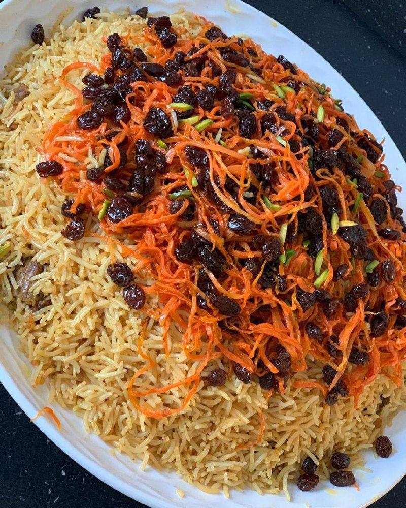
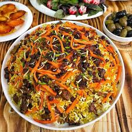
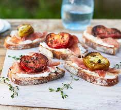
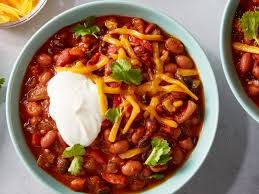

Main Course: Qabili Pulao
Qabuli Pulao is a delicious Afghan rice dish made with basmati rice, meat, and a variety of spices. Follow these steps to prepare this traditional meal.
 Ingredients
- Basmati Rice: 2 cups
- Lamb or Chicken: 1 lb
- Carrots: 2 (julienned)
- Onion:1 (chopped)
- Raisins:1/2 cup
- Salt:To taste
- Black Pepper:To taste
- Cumin:1 tsp
- Vegetable Oil:3 tbsp
- Water:4 cups
Instructions
- Rinse the basmati rice under cold water until the water runs clear. Soak the rice in water for at least 30 minutes.
- In a large pot, heat the vegetable oil over medium heat. Add the chopped onion and sauté until golden brown.
- Add the meat (lamb or chicken) to the pot and cook until browned on all sides.
- Stir in the cumin, salt, and black pepper. Add 4 cups of water and bring to a boil. Reduce heat and simmer until the meat is tender.
- Once the meat is cooked, remove it from the pot and set aside. Strain the broth and reserve it.
- In the same pot, add the soaked rice and enough reserved broth to cover the rice. Bring to a boil, then reduce heat to low, cover, and cook for about 20 minutes.
- In a separate pan, sauté the julienned carrots in a little oil until soft. Add the raisins and cook for an additional 2 minutes.
- Once the rice is cooked, fluff it with a fork and layer the sautéed carrots and raisins on top.
- Serve the rice with the cooked meat on the side or on top.
Enjoy Your Qabuli Pulao ☺!
This recipe was prepared and submitted by Freshteh
Rate this recipe:
Appetizer: Bruschetta
Ingredients
- Baguette - 1, sliced
- Tomatoes - 2 cups, diced
- Fresh basil - 1/4 cup, chopped
- Garlic - 2 cloves, minced
- Olive oil - 2 tbsp
- Balsamic vinegar - 1 tbsp
- Salt and pepper - To taste
Instructions
- Preheat the oven to 400°F (200°C).
- Arrange the baguette slices on a baking sheet and brush with olive oil.
- Bake for 5-7 minutes until golden brown.
- In a bowl, combine tomatoes, basil, garlic, balsamic vinegar, salt, and pepper.
- Top each toasted baguette slice with the tomato mixture and serve immediately.
This recipe was prepared and submitted by Sareh
Rate this recipe:
Quick Meal: Grilled Veggie Sandwich with Hummus

Ingredients
- Whole grain or toasted bread
- Hummus (chickpea spread)
- Grilled or sautéed vegetables (bell peppers, zucchini, mushrooms, or eggplant)
- Fresh spinach or lettuce
- Salt, pepper, a bit of olive oil
Instructions
- Grill or sauté the vegetables with a little olive oil, salt, and pepper.
- Lightly toast the bread.
- Spread hummus on the bread, layer the veggies, and add some fresh greens.
- Place the second slice of bread on top. and it’s ready!
This recipe was prepared and submitted by Mahdis
Rate this recipe:
International Cuisine: Margherita Pizza
Ingredients
- Flour: 250 grams
- Warm water: 150 milliliters
- Yeast: 1 teaspoon
- Sugar: 1 teaspoon
- Salt: 1/2 teaspoon
- Olive oil: 2 tablespoons
- Pizza sauce (or tomato sauce): 50 grams
- Mozzarella cheese: 200 grams
- Fresh basil leaves: 5-6 leaves
- Olive oil for drizzle: 1 tablespoon
Instructions
-
Preparing the Dough:
- Dissolve the yeast with sugar in warm water and let it sit for 5 minutes to activate.
- In a large bowl, add flour and salt, then make a well in the center.
- Pour the yeast mixture and olive oil into the flour and mix with your hands or a spoon to form a dough.
- Knead the dough on a flat surface until smooth and elastic (about 5 minutes).
- Place the dough in a greased bowl, cover it, and let it rest in a warm place for 1 hour, or until it doubles in size. Assembling the Pizza:
- After resting, divide the dough into two parts (for two pizzas).
- Roll out each piece of dough into a circle about 25 cm in diameter.
- Spread pizza sauce over each dough circle.
- Grate mozzarella cheese and sprinkle it on top of the sauce.
- Bake the pizza in a preheated oven at 220°C (450°F) for about 10-12 minutes, or until the dough is cooked and the cheese is melted.
This recipe was prepared and submitted by Parmis
Rate this recipe:
Dessert: Chocolate Cake
Ingredients
- All-purpose flour:2 cups
- Cocoa powder:3/4 cup
- Sugar:2 cups
- Baking powder:1.5 tsp
- Baking powde:3
- Milk:1 Cup
- Vegetable oil:1/2 cup
- Vanilla extract:2 tsp
Instructions
- Preheat your oven to 350°F (175°C).
- In a large bowl, mix the dry ingredients: flour, cocoa powder, sugar, and baking powder.
- Add the eggs, milk, oil, and vanilla extract. Mix until smooth.
- Pour the batter into a greased cake pan.
- Bake for 30-35 minutes or until a toothpick comes out clean.
- Let it cool before serving.
This recipe was prepared and submitted by Negar
Rate this recipe:
Dessert: Vanilla Ice Cream

Ingredients
- Heavy cream: 2 cups
- Whole milk: 1 cup
- Sugar: 3/4 cup
- Vanilla extract: 1 tbsp
- Salt: 1/4 tsp
Instructions:
- In a bowl, whisk together the cream, milk, sugar, vanilla, and salt until the sugar is dissolved.
- Pour the mixture into an ice cream maker and churn according to the manufacturer's instructions.
- Transfer to a container and freeze for at least 4 hours before serving.
This recipe was prepared and submitted by Yousef
Rate this recipe:
Vegan: Vegan Chili
Ingredients
- Canned black beans - 1 can
- Canned kidney beans - 1 can
- Canned diced tomatoes - 1 can
- Onion - 1 chopped
- Bell pepper - 1 chopped
- Chili powder - 2 tbsp
Instructions:
- In a large pot, sauté the onion and bell pepper until soft.
- Add the canned beans and tomatoes to the pot.
- Stir in the chili powder and let simmer for 20 minutes.
- Serve hot and enjoy!
This recipe was prepared and submitted by Maryam
Rate this recipe:
Vegan: Vegan Pancakes

Ingredients
- Canned black beans - 1 can
- Canned kidney beans - 1 can
- Canned diced tomatoes - 1 can
- Onion - 1 chopped
- Bell pepper - 1 chopped
- Chili powder - 2 tbsp
Instructions:
- In a bowl, mix the flour, baking powder, and salt.
- Add the almond milk and maple syrup, and stir until smooth.
- Heat a non-stick skillet over medium heat and pour in the batter.
- Cook until bubbles form, then flip and cook until golden brown.
- Serve with your favorite toppings!
This recipe was prepared and submitted by Haniya